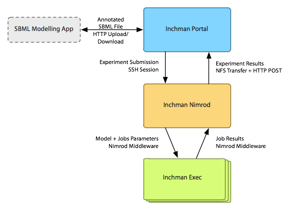

Inchman is complete system that provides access to an implementation of a spatially-resolved stochastic simulation algorithm on general-purpose graphics processing units (GPGPUs).
The front end / user interface to the Inchman system. The portal provides two core services: a model / experiment designer and data collection management. Most of the code for the designer is client based, with only things such as file manipulation, experiment submission and MathML routines residing on the server. Whereas the data collection management is virtually all server based - see "Inchman Portal - Server" for more details.
The back end of the Inchman portal. Most of the server code is devoted to the data collection management. This code was donated by the Monash e-Research Center (MeRC) and written by Simon Yu.
Inchman Nimrod is called by the Inchman Portal in order to submit experiments to the grid. The jobs are submitted via the Nimrod Java API to Nimrod/G. Once all jobs for an experiment are completed, the Inchman Portal is contacted with the use of wget.
The workhorse of the Inchman system. It's an executable built upon the GPGMP library, as created by Matthias Vigelius and further developed in collaboration with Aidan Lane.